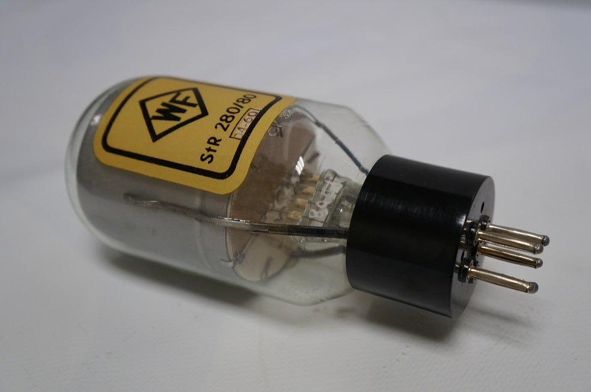

PRIMERA GENERACION: 1946-1955
-El elemento principal era la válvula del vacío.
-La programación de estos ordenadores se realizaba mediante hardware,
interconectando con cables los distintos elementos del ordenador, como
las antiguas centralitas telefonicas.
-No disponían de sistemas operativos, los datos se introducian
mediante tarjetas perforadas.
-El principal ordenador de esta generación fue el ENIAC.
